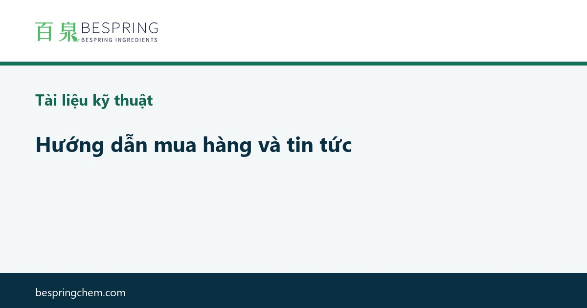

Hướng dẫn mua hàng
So sánh phosphat thực phẩm và phosphat kỹ thuật
So sánh dạng hóa học, độ tinh khiết, tạp chất, phương pháp thử và hồ sơ theo mục đích sử dụng.
Xác định ứng dụng trước. Cùng tên chất có thể có quy cách và phương pháp thử khác nhau tùy cấp chất lượng.

Đối chiếu nhóm thực phẩm
Nếu lưu hành tại Việt Nam, kiểm tra điều kiện theo quy định phụ gia, văn bản sửa đổi và quy định ghi nhãn.
Thử theo quy trình công nghiệp thực tế
Đánh giá độ tan, pH, cỡ hạt và tính tương thích ở độ cứng của nước và điều kiện phối trộn thực tế.
Dùng cùng cơ sở so sánh
Đối chiếu dạng, cơ sở biểu thị hàm lượng, giới hạn tạp chất, phương pháp thử, phạm vi áp dụng và hồ sơ.
Gửi yêu cầu mua hàng
Nêu sản phẩm, cấp chất lượng, ứng dụng, thị trường lưu hành, tiêu chí nghiệm thu, số lượng và nơi giao.